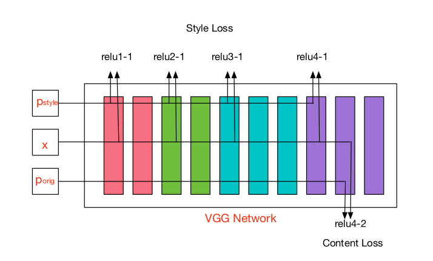

About Me
I am a third year postgraduate student at College of Computer Science and Technology, Zhejiang University. I am working with Dr. Sai Wu at Database Lab. Before that, I obtained my Bachelor degree from Sun yat-sen University in 2015. My research interests are in artificial intelligence and deep learning. Here is my CV.
Education
Zhejiang University – M.S. Computer Science, 2015 - present, GPA: 3.8
Sun Yat-sen University – B.S. Computer Science, 2011 - 2015, GPA: 3.6
Projects
-

Combined the content of one image with the style of another image using CNN.
Publications
- Wu S., Zhang MD., Chen G., Chen K., Shou LD. (Accepted) A New Approach to Compute CNNs for Extremely Large Images. In Proceedings of the 26th ACM International Conference on Information and Knowledge Management (CIKM). [pdf]
- Zhang MD., Zhan ZH., Li JJ., Zhang J. (2014) Tournament Selection Based Artificial Bee Colony Algorithm with Elitist Strategy. In Proceedings of the Conference on Technologies and Applications of Artificial Intelligence, 387–396. [link]
Awards
- Sun Yat-sen University:
- School Scholarship (2012)
- Outstanding Graduate Thesis (2015)
- Zhejiang University:
- School Scholarship (2016)
- Honor for Graduate (2016, 2017)
- VMware Achieve Scholarship (2017)